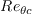
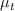

|
Langley Research CenterTurbulence Modeling Resource |
K-gamma 2-equation Transitional Model
Note: this model page was contributed by Jatinder Pal Singh Sandhu of IIT Madras, India.
This web page gives detailed information
on the equations for the
k-gamma two-equation turbulence+transition model.
The model given on this page is a linear eddy viscosity model, which uses the
Boussinesq assumption for the constitutive relation:
Unless otherwise stated, for compressible flow with heat transfer this model is implemented as described on the page
Implementing Turbulence Models into the Compressible RANS Equations, with perfect gas
assumed and Pr = 0.72, Prt = 0.90, and Sutherland's law for dynamic viscosity.
Return to: Turbulence Modeling Resource Home Page K-gamma 2-equation Transition Model
(K-gamma-2021)
The reference for the k-gamma two-equation turbulence/transition model is:
The transport equations of the k-gamma model are similar to the SST-2003 model with a few additional source terms for the k transport equation.
The model (written in conservation form) is given as:
where
Here,
and,
The approximated intermittency is modeled as:
and its gradient is computed as:
where
is the turbulent Reynolds number.
In order to obtain the gradient of approximated intermittency, the gradient of density and molecular viscosity have been ignored.
The functions which control transition are given as:
where
and
where
is the local strain-rate Reynolds number.
Also,  is calculated using the following correlation:
Here, The term where
The production term of the original transport equation is modified as
where the turbulent viscosity is defined as:
and
where
The recommended production limiter is
In the SST model, the constants are a blend of an inner (1) and an outer (2) constant, blended via
where
and
where
The cross-diffusion term is defined as:
and
where
and
The model constants are:
The unchanged original SST-2003 model constants are:
For boundary conditions, similar to the SST-2003 turbulence model, the following values are specified at a wall:
A point to note is that although the use of turbulent Reynolds number (RT) in approximated intermittency is an obvious choice, it makes the model sensitive to initial conditions for low freestream turbulence intensity cases. The model is calibrated for freestream initial conditions.
Return to: Turbulence Modeling Resource Home Page
Responsible NASA Official:
Ethan Vogel

![\frac{\partial(\rho \omega)}{\partial t}+\frac{\partial\left(\rho u_{j} \omega\right)}{\partial x_{j}}=\frac{\gamma}{\nu_{t}} P-\beta \rho \omega^{2}+\frac{\partial}{\partial x_{j}}\left[\left(\mu+\sigma_{\omega} \mu_{t}\right) \frac{\partial \omega}{\partial x_{j}}\right]+2\left(1-F_{1}\right) \frac{\rho \sigma_{\omega 2}}{\omega} \frac{\partial k}{\partial x_{j}} \frac{\partial \omega}{\partial x_{j}}](Kgamma-trans-eqns/img3.png)


The term is defined as,


The effects of pressure gradient and local turbulence intensity are accounted for using the following functions:


 is the distance to the nearest wall.
The pressure gradient parameter,
is the distance to the nearest wall.
The pressure gradient parameter,  , is defined as
, is defined as

 can be computed as:
can be computed as:


The blending function F1 is given as


![\arg _{1}=\min \left[\max \left(\frac{\sqrt{k}}{\beta^{*} \omega d}, \frac{500 \nu}{d^{2} \omega}\right), \frac{4 \rho \sigma_{\omega 2} k}{C D_{k \omega} d^{2}}\right]](Kgamma-trans-eqns/img43.png)
![F_3 = exp \left[ - \left( \frac{R_y}{120} \right)^8 \right]](Kgamma-trans-eqns/img44.png)

The strain rate magnitude  and vorticity magnitude
and vorticity magnitude  are defined as:
are defined as:


![\[\arraycolsep=6pt\def\arraystretch{3.2}
\begin{array}{lll}
\sigma_{k 1}=0.85 &\quad \sigma_{\omega 1}=0.5 &\quad \beta_{1}=0.075 \\[0.5cm]
\sigma_{k 2}=1.0 &\quad \sigma_{\omega 2}=0.856 &\quad \quad \beta_{2}=0.0828 \\[0.5cm]
\beta^{*}=0.09 &\quad \kappa=0.41 &\quad a_{1}=0.31
\end{array}](Kgamma-trans-eqns/img55.png)
The freestream values of k and omega should be set according to the desired (or specified) freestream levels of Tu and
, using


Page Curator:
Clark Pederson
Last Updated: 11/08/2021